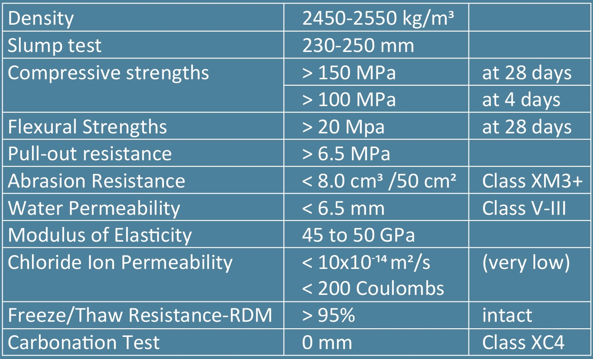
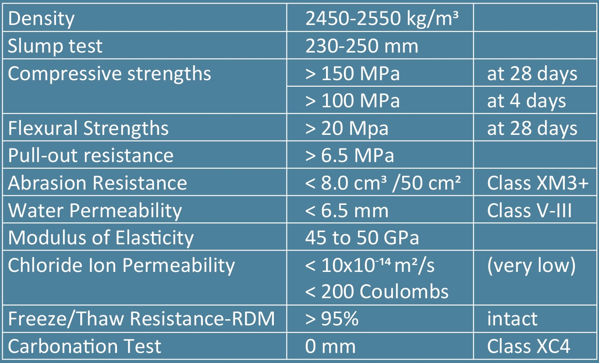

Product
PRODUCT INFO
• ForteCrete150 is a special class of densely packed fiber reinforced composite with optimized granular packing and very low water contetn that offers exceptional strength, durability, ductility, pull-out resistence and long term stability. It is designed to exhibit outstanding mechanical propertires including sustained postcracking tensile strength. ForteCrete150 is non-porous concrete imprevious to water and chemicals. It is highly resistant against acid waters, deicing salt, freeze-thaw deterioration/degradation, chloride ion penetration, chemical attack and carbonation.
APPLICATIONS
• ForteCrete150 is suitable for casting urban street furniture, thin stairs and balconies, interior decor panels, decorative facades and imact and blast resistant structures. It is primarily used for road overlays, links slags, expansion joint keys, strengthening of concrete and steel members, pier jacketing and is a closure pour UHCP material to connect prefabricated structural elements on-site. It can be used to repair traditional, cracked and failing concrete and build structures taht significantly outlast traditional concrete ones.
PROPERTIES
• densely packed fiber reinforced matrix with optimized granular packing
• outstanding mechanical properties
• up to 400 times more durable material against corrosion,
abrasion and impact than ordinary concrete
• highly resistant against acid waters, mechanical abrasion and erosion
• extremely low permeability
• ultra high-strength, ductile material
• high resistance to deicing salt and freeze-thaw deterioration
• design flexibility, improved aesthetics
• random distribution of steel and fiber throught concrete mix
• longer life span of structures
• exhibit exceptional energy absorption, capacity and resistance to fragmentation.
Ideal material to perform under explosive, impact or shock loads
• increased grider span with light-weight slender cross-sections
• rapid construction, increased material efficiency & lower transportation cost
 

Tests were performed at University of Belgrade, Faculty of Civil Engineering.